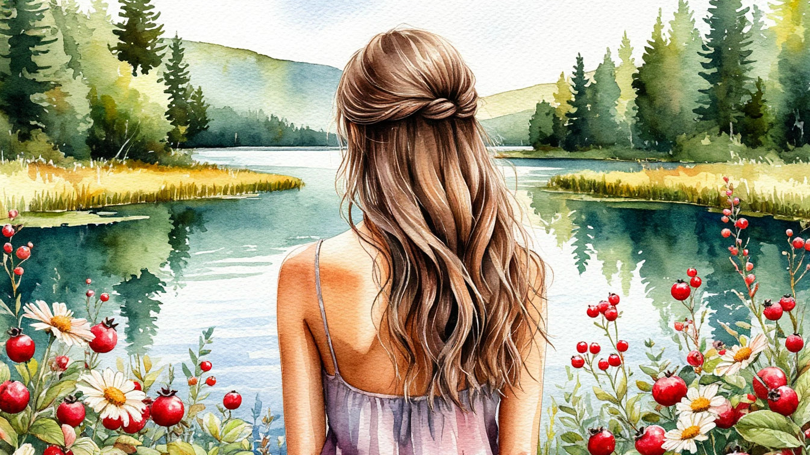

МЕГА-ТУР. Все лучшее в Карелии

Даты тура: 11 - 15 июня и длаее каждый четверг
Кострома → Петрозаводск → заповедник Кивач → палеовулкана Гирвас → Сортавала → Валаам (за доп.плату) → Рускеала → водопад Ахвенкоски → Медвежьегорск → Кижи → Кострома
Стоимость тура:
- 32 700 р. - взрослый
- 32 400 р. - пенсионеры/студенты/школьники
- 36 700 р./чел - одноместное размещение
По программе:
- - Обзорная экскурсия по Петрозаводску
- - Экскурсия в заповедник Кивач
- - Посещение Палеовулкана Гирвас
- - Экскурсия на Валаам (за доп.плату) или обзорная экскурсия по г. Сортовала (включено в стоимость тура)
- - Экскурсия "Мраморное чудо Рускеала"
- - Фотостоп у водопадов Ахвенкоски
- - Экскурсия по Медвежьегорску
- - Экскурсия на Кижи
Программа тура:
1 день: Отправление
- 16-00- выезд из Костромы от ТРЦ "РИО". Ночной переезд.
2 день: Кивач + Петрозаводск
- Прибытие в Петрозаводск
- Завтрак в кафе города.
- Обзорная экскурсия по Петрозаводску. Знакомимся с этим уютным городом.
- Петрозаводск — столица республики Карелия, один из самых живописных и самобытных городов России! Этот город, основанный Петром I, протянулся на 22 км вдоль Онежского озера всегда радостно встречает своих гостей, и опытный гид позволит познакомиться поближе со столицей Карелии.
- В рамках автобусно-пешеходной экскурсии вы узнаете об истории города и увидите главные достопримечательности, среди которых особое место занимает набережная Онежского озера, вдоль которой можно увидеть необычные памятники, подаренные городами-побратимами. Вид утренней Онеги украсит вашу прогулку.
- Экскурсия в заповедник Кивач "Алмазна сыплется гора"
- Заповедник «Кивач» является одним из старейших на территории России. Он был основан ещё в 1931 году. Заповедник – настоящий памятник, хранящий красоту удивительной Карельской природы
- Водопад Кивач – природная жемчужина заповедника и Карелии, это второй по величине равнинный водопад в Европе. Смотреть на падение воды можно бесконечно, водопад скатывается каскадами, разбрызгивая капли на фоне живописных природных пейзажей! Водопад Кивач окутан тайнами и легендами. Увидеть его стоит хотя бы для того, чтобы узнать интересные факты и сделать красивейшие фотографии.
- Обед
- Посещение Палеовулкана Гирвас
- Вулкан Гирвас — древний потухший вулкан в Карелии возрастом более 2–3 млрд лет! В настоящее время здесь сохранились более 20 застывших лавовых потоков толщиной до 32 метров и следы кратера, который считается одним из древнейших на планете и в Карелии!
- Заселение в гостиницу.
3 день: Валаам* + Рускеала
- Ранний выезд из гостиницы
- Завтрак в пути.
- Прибытие в г.Сортавала
- Экскурсия на Валаам. Цена: взрослый - 5900 руб./чел., дети от 7-12 лет - 2 950 руб./чел., дети до 6 лет - бесплатно.
- Валаам – место святое, окутанное туманами и тайнами. Это тихий и скалистый остров, расположившийся над холодными водами Ладожского озера. Главная достопримечательность острова — действующий Спасо-Преображенский мужской монастырь стоимость на Валаам уточняется!
- Что обязательно стоит сделать на Валааме?
- Познакомиться с устройством центральной усадьбы Валаамского монастыря.
- Послушать знаменитые валаамские распевы в надвратном Петропавловском храме Спасо-Преображенского монастыря.
- Прогуляться по дремучим лесам и столетней дубовой аллее и найти там «сосну Шишкина» — место, где много писал свои пейзажи художник.
- Для тех, кто не едет на Валаам обзорная экскурсия по городу.
- Многострадальная Сортавальская земля! Ее история пестрит войнами и захватами, а территория всегда была лакомым кусочком.
- Сортавала — город, представляющий собой настоящую историческую ценность и имеющий необыкновенно интересное прошлое. Благодаря изобилию архитектурных достопримечательностей и красоте окружающей природы считается туристическим центром Карелии.
- Мы увидим самые известные достопримечательности этого удивительного города и полюбуемся гористыми ландшафтами, панорамами Ладожского озера и прибрежных островов, улицами, застроенными старинными зданиями. Узнаем, где располагались поселения финно-угорских народов, сколько раз Сортавала становилась финской и как строилось здание финского банка, словно вырезанного из куска скалы.
- Финальная точка нашей экскурсии — парк Ваккосалми. Здесь остановимся на певческом поле: это природный амфитеатр, где проходили песенные фестивали (сейчас эта традиция возобновлена). Гид расскажет, как город, основанный шведским королём, стал культурной столицей Финляндии, а после — Российским туристическим городом. И в завершение поднимемся на гору Кухавуори и полюбуетесь видом на Сортавалу с высоты.
- Обед.
- Экскурсия "Мраморное чудо Рускеала " (Входные билеты ВКЛЮЧЕНЫ в стоимость тура)
- Горный парк «Рускеала»- это одна из самых популярных и крупных достопримечательностей Карелии – площадь парка 6 гектаров!
- С 17 века здесь добывали мрамор, который потом использовали для постройки Зимнего дворца и Исаакиевского собора в Петербурге. Гулять летом по этим тропам- настоящее сказочное приключение! Живописные мраморные скалы отражаются в зеленоватой глади чистейших озёр, Рускеала - символ возрождения карельской земли, символ гармонии человека и природы!
- Фотостоп у водопадов Ахвенкоски. Водопады Ахвенкоски – небольшие, но живописные каскады на лесной реке Тохмайоки – привлекли в свое время многих кинорежиссеров: здесь проходили съемки знаменитых кинофильмов «А зори здесь тихие…» и «Темный мир».
- Возвращение в гостиницу.
- Завтрак
- Выезд из гостиницы с вещами.
- Переезд в Медвежьегорск (около 160км )
- Прогулка по Медвежьегорску, основанному в 1916 году в связи со строительством Мурманской железной дороги. Осмотр деревянного здания вокзала, ровесника города. Рассказ о железной дороге и драматических событиях на русском севере в первую половину 20 века.
- Обед.
- Отправление на Кижи (стоимость экскурсии на Кижи ВКЛЮЧЕНА в стоимость тура!) Наружный осмотр всех памятников острова, осмотр интерьеров (церковь Покрова Пресвятой Богородицы,одного из крестьянских домов)
- По Онежскому озеру мы переправимся на знаменитый остров Кижи.
- Кижи – еще одна настоящая жемчужина Карелии! Здесь, в уникальном музее-заповеднике под открытым небом собраны памятники архитектуры, иконописи и предметы быта, которые создавались в карельских, вепсских и русских деревнях на протяжении столетий. Этот национальный парк включает в себя не только удивительную по красоте природу русского Севера, но и памятники архитектуры северного края (избы, церкви, хозяйственные постройки).
- Здесь можно найти разнообразные предметы этнографии, живописи, старопечатные и рукописные книги, чертежи и фотографии.
- Основателям этнографического музея удалось восстановить жизнь и крестьянский быт жителей Севера. Мы сможем буквально окунуться в атмосферу давно ушедшей эпохи. На острове снуют по своим ремесленным делам мастера забытых профессий в национальных карельских одеяниях. А вот умельцы с удовольствием и интересом делятся с туристами секретами своего мастерства, демонстрируют приемы плотницкого и ткацкого ремесла. На ваших глазах изготавливают сувениры, вырезанные из дерева, вышитые и сплетенные из бисера.
- Отправление домой
- - проживание в гостинице*
- * Гостиница "Лососинская" (номер реестровой записи: С102024017115)
- - питание по программе;
- - услуги гида-экскурсовода
- - экскурсионная программа
- - автобусное обслуживание по программе тура
- - Экскурсия на Валаам. Цена: взрослый - 5900 руб./чел., дети от 7-12 лет - 2 950 руб./чел., дети до 6 лет - бесплатно
- Внимание!!! В случае неблагоприятных погодных условий (шторм и пр.) рейс может быть отменен.
За дополнительную плату (по желанию):
4 день: Кижи
5 день:
Прибытие в Кострому (ориентировочно после обеда)
В стоимость тура входит:
Дополнительно оплачиваются (по желанию):
- Для бронирования необходимы данные паспорта РФ и свидетельства о рождении, если с вами путешествуют дети
- Предоплата – 50% от стоимости тура. Остаток за 30 дней до даты выезда.
- Любой тур можно оформить не выходя из дома. Подробнее: Тут
Стоимость тура не зафиксированы и могут быть изменены в большую или меньшую сторону в зависимости от уровня спроса в любой момент.
Время начала экскурсий и их порядок указано ориентировочно.
Фирма-исполнитель оставляет за собой право замены экскурсий без уменьшения общего объема экскурсионной программы.
По вопросам бронирования обращайтесь: